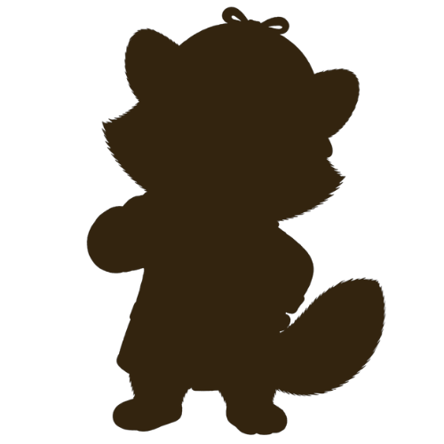

Akte: Sommer 2026 · Zirndorf
Psst … hier ist etwas im Gange.

–Tage
–Stunden
–Minuten
–Sekunden
Die Akte wird geöffnet am 03.08.2026
Hinweis 1: Wer gut hinschaut, ist klar im Vorteil.
Hinweis 2: Es wurden bereits erste Spuren in der Stadt gesichtet.
Hinweis 3: Wer dranbleibt, wird belohnt. Kosten? Keine.
🤫 Geheimnisse darf man weitersagen

Wer steckt dahinter?
- Veranstalter
- ChaRUNity e.V.
- Sponsor
- Helpi
- Idee & Umsetzung
- openzirndorf